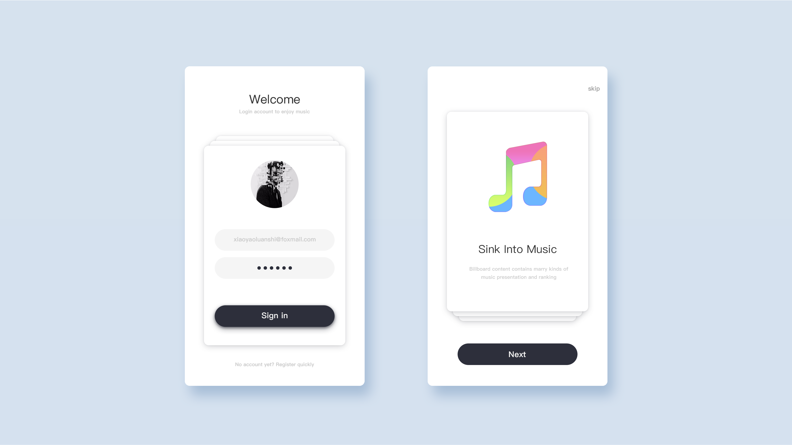
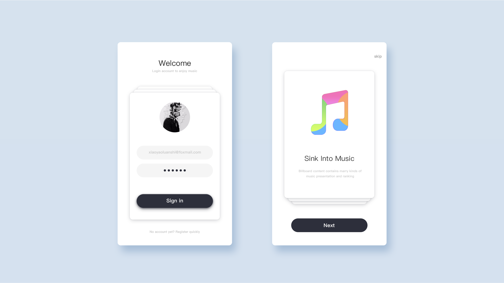

- 从接触UI为止，一直有保持练手作图的习惯，在Dribbble上领略概念稿件，在Behance上思索真实项目。
- 偶尔会设计类似追波风的界面，保持自己的灵感与技巧。更多的时候，会选择掺杂进交互的概念去思索每一个元素设计真实界面。
- 以下是我部分练习作品，望不吝批评。
UI设计
#色彩的层次
- 简化配色方案是改善用户体验最简单的方法之一。
- 但限制色彩数量并不意味着黑白灰一路到底，应该理解为使用必要的颜色来构建整个视觉体系。
- 通过对色彩层次的组合，带有强调性的色彩可以将用户注意力吸引到特定的区域，都不需要额外的视觉提醒了。


#卡片式设计
- 每个卡片都承载着属于自己的内容。卡片能承载着几乎所有类型的内容——多媒体、文本、链接，等等，而这所有的信息都经由卡片，被收纳到统一的主题之下。
- 当卡片从现实生活走进移动端界面之后，它开始成为真正强大的工具，内容以卡片为载体，化作更容易为用户所消化的内容。


#神秘的阴影
- 阴影的存在，让界面产生了有纵深的感觉。
- 它让图片和其他元素从背景中“弹出”并拥有深度，微妙合理的阴影不会让用户感到分心，同时使界面更具真实感。
- 不要过度依赖重阴影、极端渐变和复杂的光照效果，它们太过于分散用户注意力了。真正有价值的是那些微妙而实用的阴影，那些符合物理规则的过渡效果。人是视觉动物没错，但是用户最终还是更喜欢简单干净、符合自然感知的设计。


#趣味与创意
- 在理性的规范间寻求创意的体现，在简约的界面中孕育趣味的操作
- 创意与趣味总是体现在最不经意的细节之处，整体一致下，对于细节的追求是一位设计师的本能。

#大而简，简而精
- 通过对字体大小和粗细的调整以及更多的留白来帮助用户理解界面的层级架构，取代了之前使用平面元素的分割和分层来构建界面架构的方式，从而让界面变的更加扁平，内容更加突出。
- 放大按钮的尺寸、改变按钮的布局、赋予按钮不同的色彩来提高用户对可操作内容的认知，降低点击操作的难度，使界面与用户的交互行为变的更友好。

#拟物风格
- 源于技法，高于技法。尝试复制自然造物主所赋予的最本真状态。
- 通过模仿公众熟知的日常物体的视觉线索，拟物化设计能降低用户去了解如何使用产品时需要的认知负荷。

#色彩的层次
- 简化配色方案是改善用户体验最简单的方法之一。
- 但限制色彩数量并不意味着黑白灰一路到底，应该理解为使用必要的颜色来构建整个视觉体系。
- 通过对色彩层次的组合，带有强调性的色彩可以将用户注意力吸引到特定的区域，都不需要额外的视觉提醒了。

{kind=link}
#卡片式设计
- 每个卡片都承载着属于自己的内容。卡片能承载着几乎所有类型的内容——多媒体、文本、链接，等等，而这所有的信息都经由卡片，被收纳到统一的主题之下。
- 当卡片从现实生活走进移动端界面之后，它开始成为真正强大的工具，内容以卡片为载体，化作更容易为用户所消化的内容。
#神秘的阴影
- 阴影的存在，让界面产生了有纵深的感觉。
- 它让图片和其他元素从背景中“弹出”并拥有深度，微妙合理的阴影不会让用户感到分心，同时使界面更具真实感。
- 不要过度依赖重阴影、极端渐变和复杂的光照效果，它们太过于分散用户注意力了。真正有价值的是那些微妙而实用的阴影，那些符合物理规则的过渡效果。人是视觉动物没错，但是用户最终还是更喜欢简单干净、符合自然感知的设计。
#趣味与创意
- 在理性的规范间寻求创意的体现，在简约的界面中孕育趣味的操作
- 创意与趣味总是体现在最不经意的细节之处，整体一致下，对于细节的追求是一位设计师的本能。
#大而简，简而精
- 通过对字体大小和粗细的调整以及更多的留白来帮助用户理解界面的层级架构，取代了之前使用平面元素的分割和分层来构建界面架构的方式，从而让界面变的更加扁平，内容更加突出。
- 放大按钮的尺寸、改变按钮的布局、赋予按钮不同的色彩来提高用户对可操作内容的认知，降低点击操作的难度，使界面与用户的交互行为变的更友好。
#拟物风格
- 源于技法，高于技法。尝试复制自然造物主所赋予的最本真状态。
- 通过模仿公众熟知的日常物体的视觉线索，拟物化设计能降低用户去了解如何使用产品时需要的认知负荷。